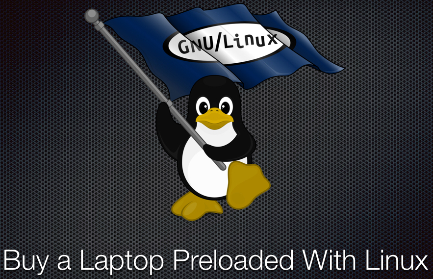
I want a Linux system without having to pay a Microsoft tax. The hardest part of using Linux is to find out the correct hardware. Hardware compatibility and drivers can be a big issue. But where one can find Linux desktops or Laptop for sale? Here are ten places to buy a preinstalled Linux Desktop and Laptop in alphabetical order.
1. Dell
Dell sells a high-end Redhat Enterprise Linux and Ubuntu Linux-based laptop for business use, developers and sysadmins. If you are a developer and tend to travel a lot, give it a try to “XPS 13 Developer Edition” powered by Ubuntu Linux. Dell also offers precision workstations class laptop with RHEL or Ubuntu operating system. Precision workstations are designed for CG professionals, or as small-scale business servers.
| 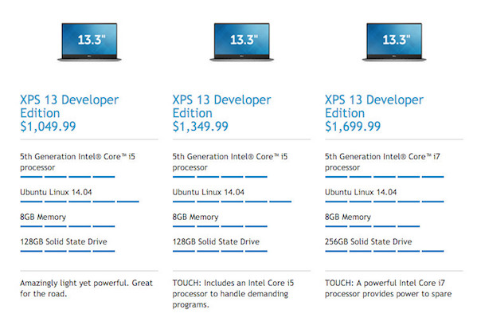 |
| Linux pre-loaded Laptop: Yes |
Sample config:
|
| Proprietary driver required: Yes and supported by Linux |
| Certified by the Free Software Foundation: No |
| Open source Libreboot BIOS: No |
| Shipping: Worldwide including USA and Europe |
| More info: XPS 13 Developer Edition Preloaded With Ubuntu |
Dell also offers new Intel Skylake processors and workstation GPUs its lineup of Precision workstations powered by RHEL or Ubuntu Linux. These are extremely high-end devices.
Related: The Novice Guide To Buying A Linux Laptop
2. EmperorLinux
This vendor sells Linux laptops with full hardware support under Linux. You choose the type of machine you want. You choose the distribution you want. You can choose to have a dual-boot machine too. You can specify your partitions and more. EmperorLinux sale Linux laptop from Panasonic, Dell, and Lenovo.
| 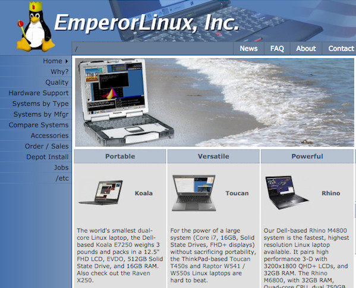 |
| Linux pre-loaded Laptop: Yes |
| Config: Various |
| Proprietary driver required: Yes and supported by Linux |
| Certified by the Free Software Foundation: No |
| Open source Libreboot BIOS: No |
| Shipping: USA (international shipping available on request) |
| More info: http://www.emperorlinux.com/ |
3. Libiquity
This laptop vendor certified to Respect Your Freedom. It means your laptop is 100% free from binary blobs. It runs the FSF-endorsed Trisquel operating system and libreboot firmware on hardware.
| 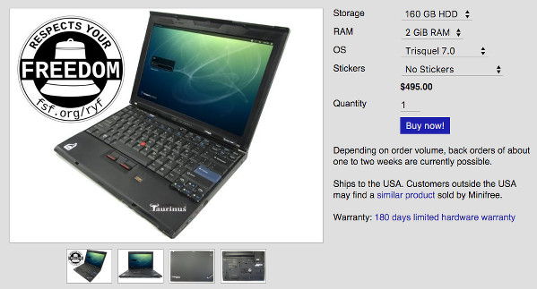 |
| Linux pre-loaded Laptop: Yes |
Config:
|
| Proprietary driver required: No |
| Certified by the Free Software Foundation: Yes |
| Open source Libreboot BIOS/firmware: Yes |
| Shipping: USA (for international shipping try minifree) |
| More info: libiquity.com |
4. Linux Certified
This vendor sells Linux services including robust and cost-effective Linux laptops.
| 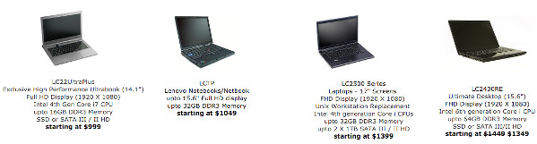 |
| Linux pre-loaded Laptop: Yes |
| Config: Various |
| Proprietary driver required: Yes |
| Certified by the Free Software Foundation: No |
| Open source Libreboot BIOS/firmware: No |
| Shipping: USA |
| More info: linuxcertified.com |
5. Los Alamos Computers
This vendor sells Lenovo laptop preloaded with Linux operating system. You will find the laptop as per your needs such as performance, everyday computing, ultraportable and economy version.
| 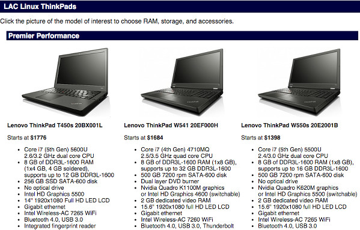 |
| Linux pre-loaded Laptop: Yes |
| Config: Various |
| Proprietary driver required: Yes |
| Certified by the Free Software Foundation: No |
| Open source Libreboot BIOS/firmware: No |
| Shipping: USA |
| More info: laclinux.com |
6. Minifree
This vendor sells GNU/Linux laptops that are certified to Respect Your Freedom. It means your laptop is 100% free from binary blobs. It runs the FSF-endorsed Trisquel operating system and libreboot firmware on hardware. You can buy an ultracompact or workstation grade laptop from Minifree. Personally, I’m using Libreboot X200 model.
| 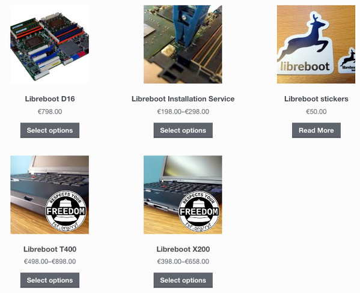 |
| Linux pre-loaded Laptop: Yes |
Config: (a) Libreboot T400:
|
| Proprietary driver required: No |
| Certified by the Free Software Foundation: Yes |
| Open source Libreboot BIOS/firmware: Yes |
| Shipping: UK and worldwide |
| More info: minifree.org |
7. Purism
This vendor sells Linux preloaded on the Librem 13 and the Librem 15 laptops. Purism claims to follow a strict belief in users’ rights to privacy, security, and freedom.
| 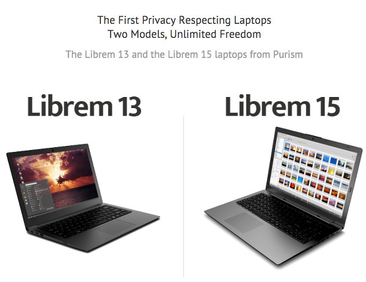 |
| Linux pre-loaded Laptop: Yes |
| Config: Various |
| Proprietary driver required: No |
| Certified by the Free Software Foundation: No |
| Open source Libreboot BIOS/firmware: No |
| Shipping: USA and worldwide |
| More info: puri.sm |
8. System76
This vendor sells Ubuntu Linux based laptop, server, and desktop computer. It is one of the most recommended brand by Ubuntu forum members.
| 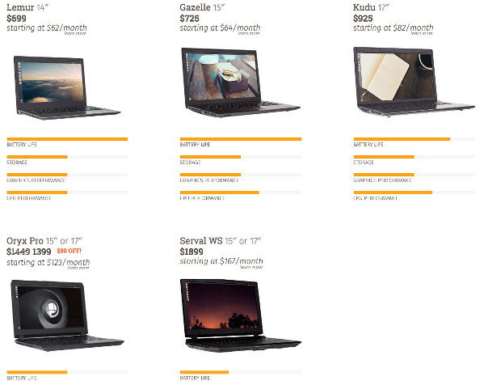 |
| Linux pre-loaded Laptop: Yes |
| Config: Various |
| Proprietary driver required: Yes (for Nvidia based GPU) |
| Certified by the Free Software Foundation: No |
| Open source Libreboot BIOS/firmware: No |
| Shipping: USA and 55 other countries. |
| More info: system76.com |
9. ThinkPenguin
This vendor sells a laptop with GNU/Linux. The vendor also does test laptop with OpenBSD but only ships with Linux distro.
| 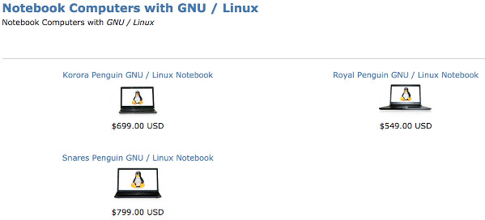 |
| Linux pre-loaded Laptop: Yes |
| Config: Various |
| Proprietary driver required: No |
| Certified by the Free Software Foundation: No |
| Open source Libreboot BIOS/firmware: No |
| Shipping: USA |
| More info: thinkpenguin.com |
10. ZaReason
This vendor sells Linux-based laptop based on rock solid R&D. You can get easy-to-use free and open source software for with each laptop or desktop or server.
| 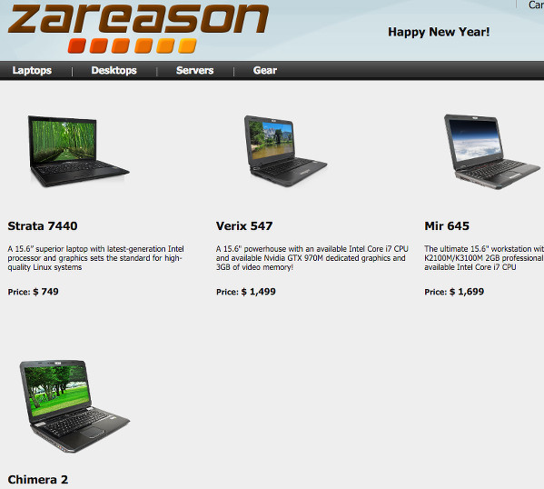 |
| Linux pre-loaded Laptop: Yes |
| Config: Various |
| Proprietary driver required: Yes (for Nvidia based GPU) |
| Certified by the Free Software Foundation: No |
| Open source Libreboot BIOS/firmware: No |
| Shipping: USA and Canada |
| More info: zareason.com |
Bounce: Lenovo
Lenovo ThinkPads, especially X and T series are popular choices for Linux users, sysadmins and developers. Most ThinkPads offers out of the box Linux compatibility. Here are some of the systems that I’ve used so far:
- ThinkPad X200 CentOS 6.x
- ThinkPad X220 CentOS 6.x
- ThinkPad X230 RHEL 6.x
- ThinkPad X240 RHEL 7.x
- ThinkPad X131e Fedora 20-23
- Thinkpad T400/T440p/T500/T520/T530/W5{10,20,30,4} CentOS and RHEL 6.x or 7.x
Unfortunately, Lenovo does not sell laptop preloaded with Linux to the end users. You need to visit their Linux Certification page. This vendor included here due to popular demand.
| 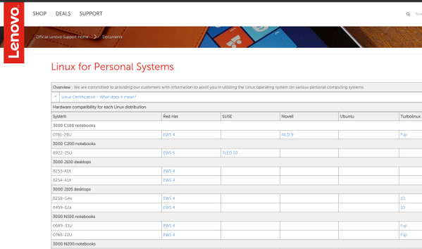 |
| Linux pre-loaded Laptop: No but highly recommended and supported by GNU/Linux community |
| Config: Various |
| Proprietary driver required: Yes and supported by Linux |
| Certified by the Free Software Foundation: No |
| Open source Libreboot BIOS: No |
| Shipping: Worldwide |
| More info: Linux for Personal Systems | Lenovo store (US) |
Conclusion
Dell Precision and Latitude machines have worked for me over the years. Original IBM Thinkpads too. Currently, I’m using the following systems:
- Lenovo x230 with OpenBSD (personal)
- Dell m6500 workstation with Ubuntu 14.04 LTS Linux (my work laptop)
- Minifree Libreboot X200 with Gnu Trisquel Linux (my travel laptop)
System76 looks better with excellent hardware, and high quality too. You can just buy it and start working on it. No need to worry about drivers or suspend issue. Same with other vendors mentioned in this post. The FSF only recommends the Minifree or Libiquity vendor. Both of them sell modified ThinkPads. So the hardware is pretty reasonable, and you get 100% binary blob free environments.
What laptop do you recommend for use with Linux? Please add your advice on what to avoid. Any horror stories about particular vendors?
//Image credit: TUX Linux by deiby-ybied
Share this on:
Comments on this entry are closed.
If you’re looking for a huge number of Linux laptop and desktop customization options, I’ve just launched the latest version of my online computer store: https://jccss.ca
We specialize in Linux, and any free Linux distro you want is available with every system, as well as dual boot configs at no extra charge. If you order from JCCSS, Microsoft seriously doesn’t get paid unless you opt for Windows.
I don’t normally like to spam, but am looking for some exposure in the right places, as the site was just completely rewritten and the new version launched yesterday.
Shipping world-wide from Ottawa, Ontario, Canada
Thanks, I was looking for a laptop which can run FreeBSD 10.x+
I bought my laptop here http://www.mysn.co.uk/
I must say: It is amazing. You can customize your laptop, and cancel the Microsoft OS.
That’s what I did. I got the laptop just with the BIOS, and I installed debian.
MySN is a German company which basically uses the Clevo cases and build up custom PC’s.
AlienWare when it first came out, used Clevo cases and added further customization.
Ive had nothing but trouble with HP laptops and Linux, i have no idea why its easier to work with Scientific/ CEntOS on Dells than it is for something as usable as Ubuntu on an HP machine
Also if you want to have only linux several types of pc:http://www.insys.pt/#!notebooks/c11pu
http://www.vantpc.es from Spain, is selling laptops and desktops with preinstalled Ubuntu Linux
The Linux laptop company isn’t on this list, but I certainly am loving my Lenovo yoga 2-in-1 from them! thelinuxlaptop.com
Great link, thanks
Worth to mention: http://www.tuxedocomputers.com
Germany based, shipping worldwide, most EU countries even get free shipping.
With the recent news of Lenova shipping malware, is it really a good idea to use them?
Yes for Linux sake . I actually like that lenovo shipped a malware for windows system, here we see the power of Linux again, just put any piece of garbage code and the community will look for you everywhere with torches and shovels in hand
I assumed you own a Mac too?
Yes. I do. I’ve more computers, ARM boards and servers in my home lab. Hehe…
Nice topic, and there are 11 typos to be fixed: “Propitiatory driver required” => Proprietary
Thanks for the heads up.
The shipping is worldwild or worldwide lol ?
This author use no spellchecker.
therein lies the problem.
In Spain there is a new vendor who started shipping notebooks with preinstalled Linux in july 2015. You can find more information here: http://www.slimbook.es
Mate, thanks so much! Really hard to find decent Linux laptop sellers in UK & this is a very financially viable option, whereas importing from the US isn’t. Never heard of these guys before, looks like a decent package for the money…
How do some of those companies obtain laptops like Lenovo without Windows? Isn’t your Windows-tax just hidden in the price because they’re wiping Windows and installing Linux?
They are Lenovo business partners. They can have laptop with or without Windows. They also get tons deep discounts as they ordered lots of devices.
I contacted Lenovo and they claimed they all come with Windows.
https://lenovosupport.custhelp.com/app/chat/chat_launch_lpa